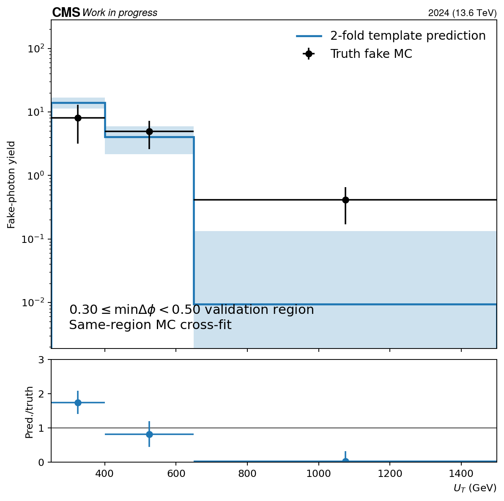
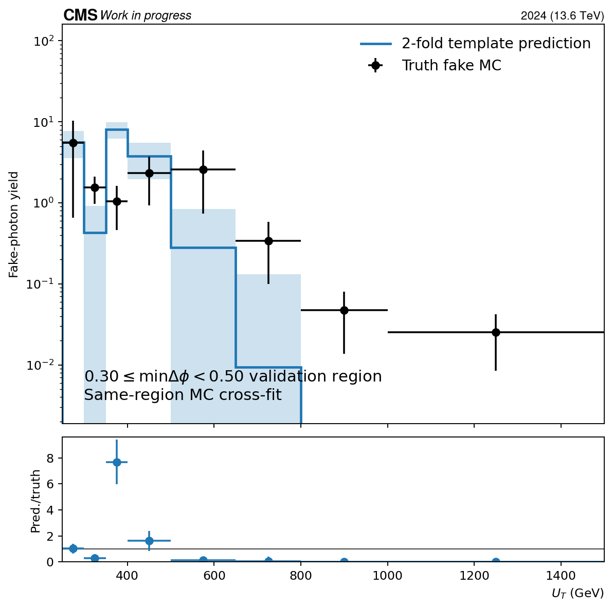
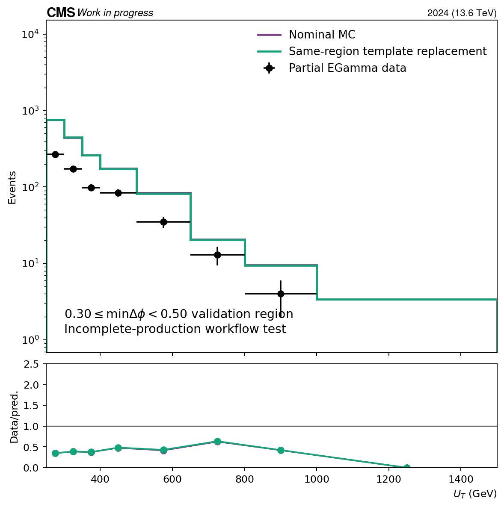
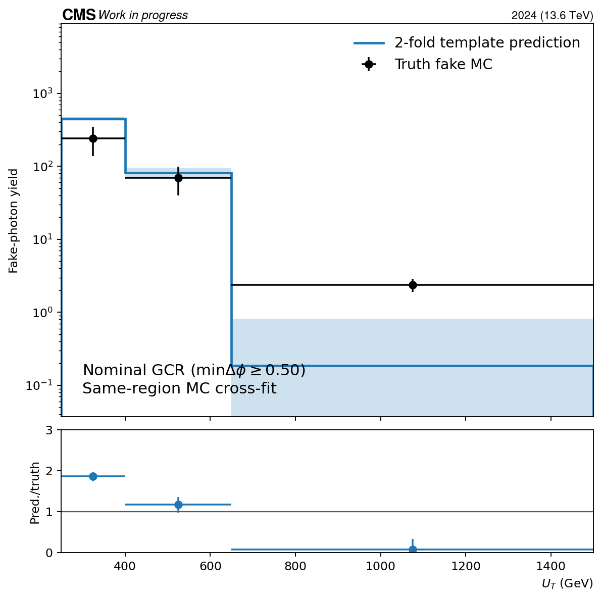
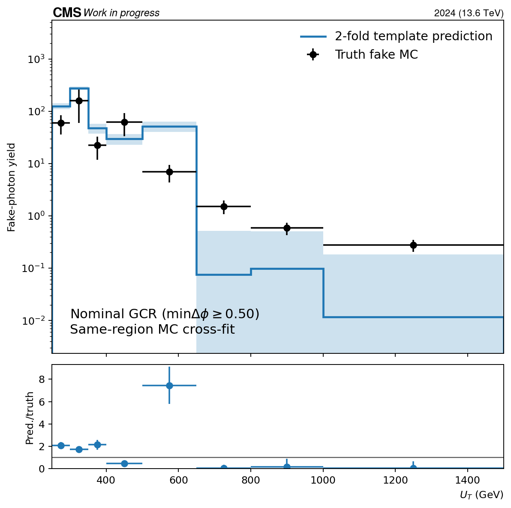
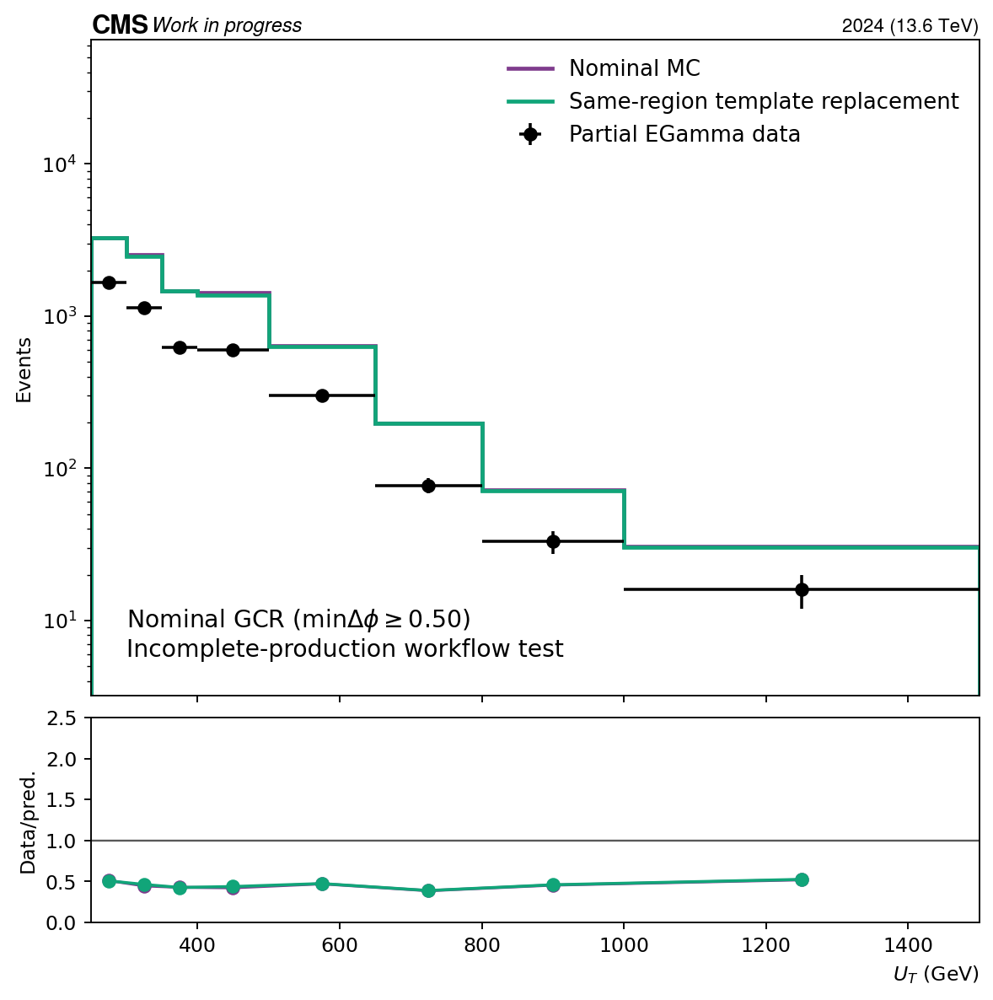

Status: incomplete-production diagnostic; no adoption decision.
The fake shower-shape template and the pass-region fit use the same delta-phi topology but disjoint charged-isolation states. The MC closure is a deterministic two-fold cross-fit, so no event is used both to build its template and to test it.
Inputs: 1544 compact files and 393225 events. Nominal intermediates were not modified.
| Region | Partial data | Nominal MC | Template total | Fitted fake | MC pred./truth | Truth Neff | Usable fit pieces |
|---|---|---|---|---|---|---|---|
| GCR_DPhiVR_High | 673 | 1758.53 | 1752.88 | 7.74788 | 1.3529249457074335 | 6.1 | 52/64 |
| GCR | 4458 | 9610.55 | 9495.41 | 199.303 | 1.6926012054438089 | 8.47 | 52/64 |
| Region | Group | Fail-iso data | Pass-iso data | Tight-shape fraction | Clipped bins | Usable |
|---|---|---|---|---|---|---|
| GCR_DPhiVR_High | EB_pt220to400 | 411 | 415 | 0.1082 | 1 | 1 |
| GCR_DPhiVR_High | EE_pt220to400 | 172 | 169 | 0.2388 | 3 | 1 |
| GCR_DPhiVR_High | EB_pt400toinf | 114 | 110 | 0 | 3 | 0 |
| GCR_DPhiVR_High | EE_pt400toinf | 28 | 21 | 0.2202 | 2 | 1 |
| GCR | EB_pt220to400 | 2479 | 2607 | 0.2567 | 1 | 1 |
| GCR | EE_pt220to400 | 1161 | 1112 | 0.4932 | 1 | 1 |
| GCR | EB_pt400toinf | 892 | 861 | 0.1369 | 2 | 1 |
| GCR | EE_pt400toinf | 248 | 211 | 0.3566 | 2 | 1 |






Machine-readable output: evaluation.json